TOP → マイクラ統合版アドオン by YuuhaLand → Legacy GameConsoleUI
Legacy GameConsoleUI
コンソールエディション(WiiU, 旧Switch, PS3, 旧PS4, Xbox360, 旧Xbox One)のようなUIにするリソースパックです!
コンソールエディション(WiiU, 旧Switch, PS3, 旧PS4, Xbox360, 旧Xbox One)のようなUIにするリソースパックです!
このアドオンの説明
コンソール版のマイクラで遊んだことはありますか?このリソースパックは、スタート画面などのUIをコンソール風のUIにすることが出来ます!
v1.1.2 アップデート！
変更点と追加:
- 1.20.10以降でワールドに参加しようとするとフリーズするバグを直しました。
このアドオンの使い方
ダウンロードして、マイクラにインポートし、グローバルリソースに適用するだけで使えます。他にUI変更リソースパックを使用している場合、Legacy GameConsoleUIを上位にしないと上手く動作しない可能性があります。
どんなUIになる？
対応している画面の一部です。
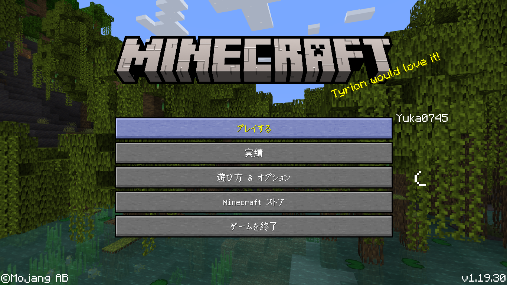
スタート画面
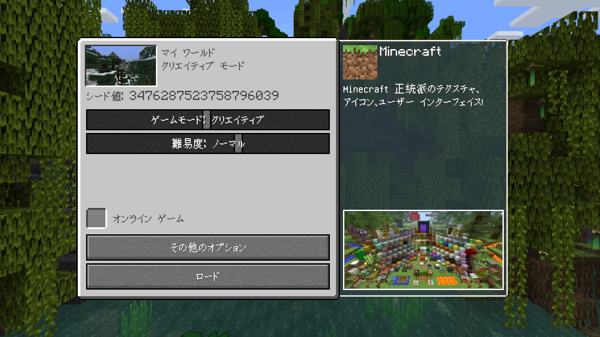
ワールドロード画面
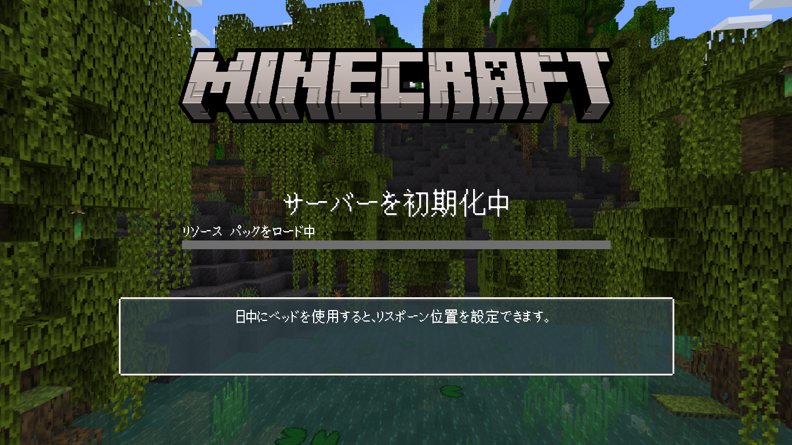
プログレス画面
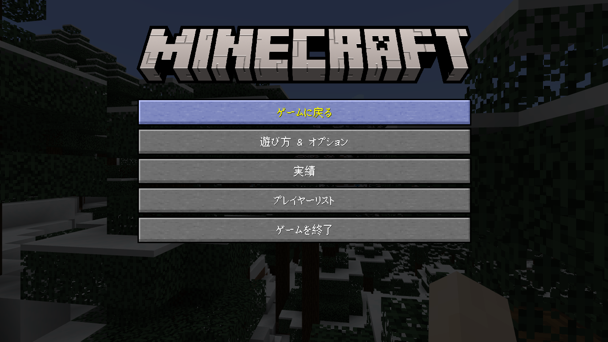
ポーズ画面
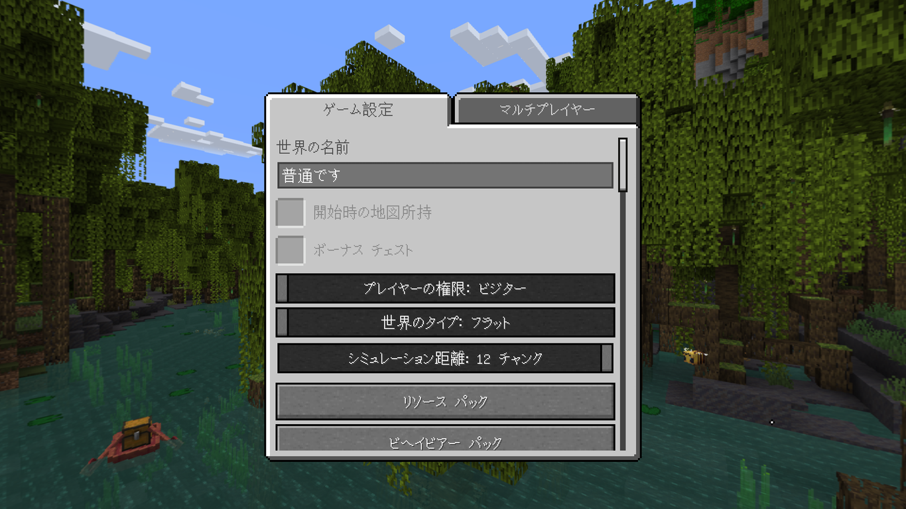
ワールド設定画面
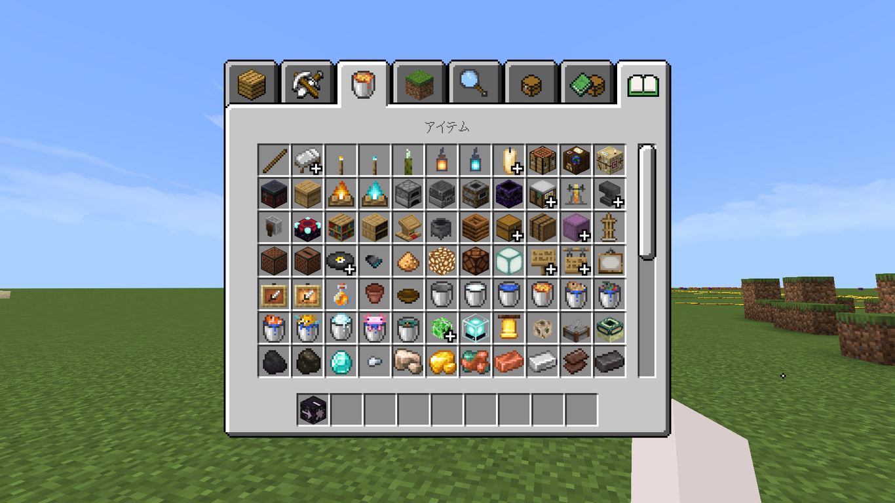
クリエイティブインベントリ画面
スタート画面
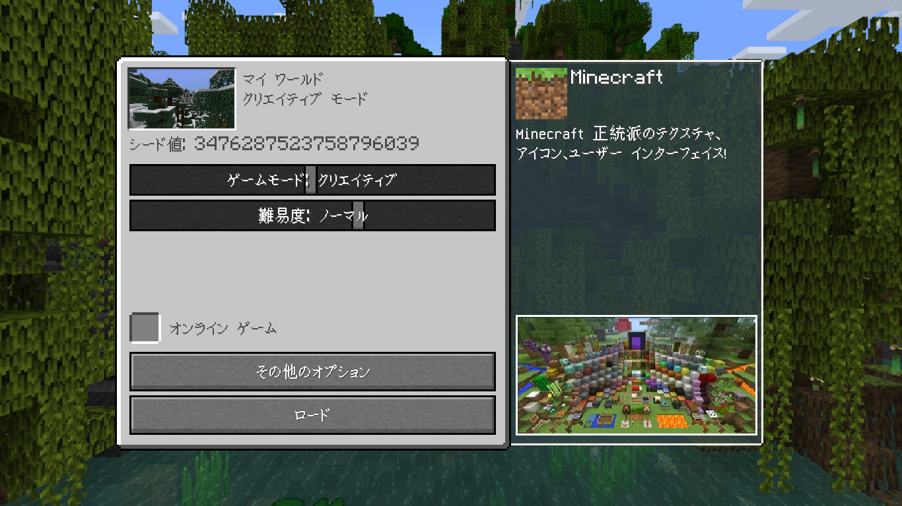
ワールドロード画面
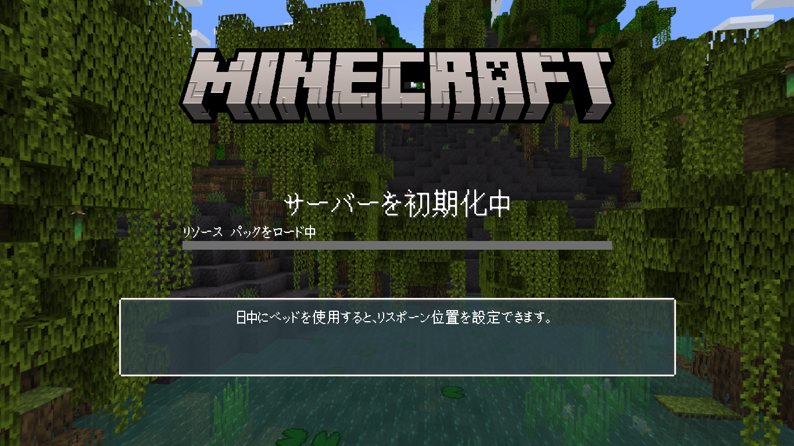
プログレス画面
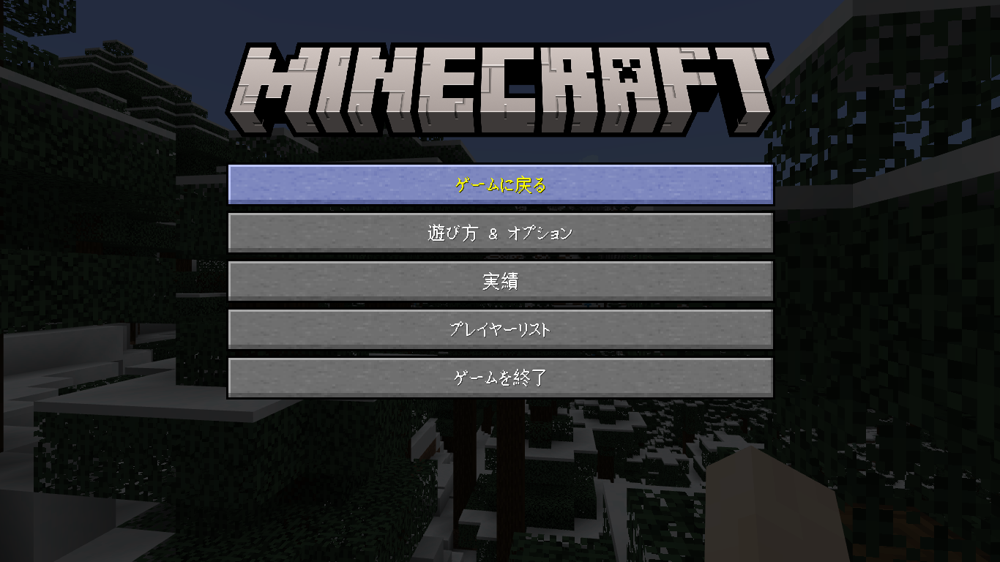
ポーズ画面
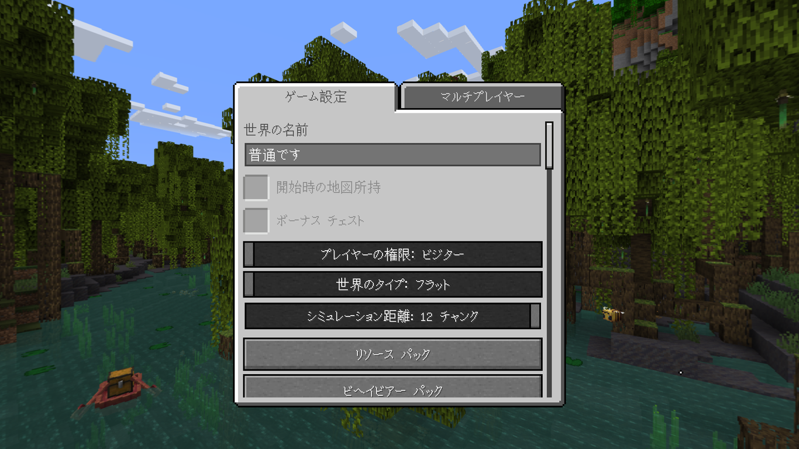
ワールド設定画面
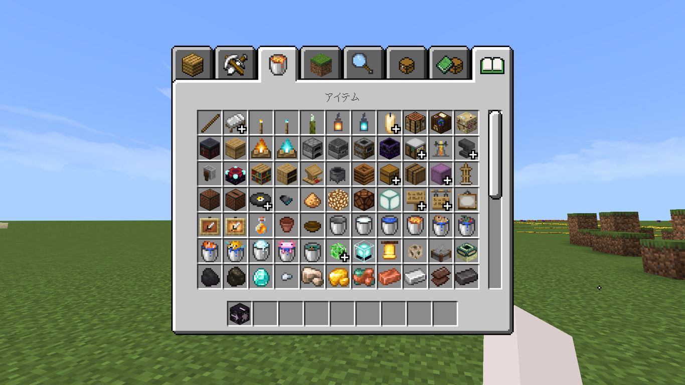
クリエイティブインベントリ画面
注意
このパックのコードなどは、自由にコピー・改変・他のパックへの組み込み出来ます。ただし、説明欄など任意の場所にこのページへのリンクや、Legacy GameConsoleUIからコピーしたことをしっかり明記してください。
なお、ワールドやサーバーのリソースパックに適用することも出来ますが、おすすめできません。
ワールドに入った人の混乱や誤解などを招く可能性があるので、適用しないことをおすすめします。
ダウンロード
Github Releasesからダウンロードできます。ここをクリックしてダウンロードする!
YuuhaLandのサイト ©YuuhaLand